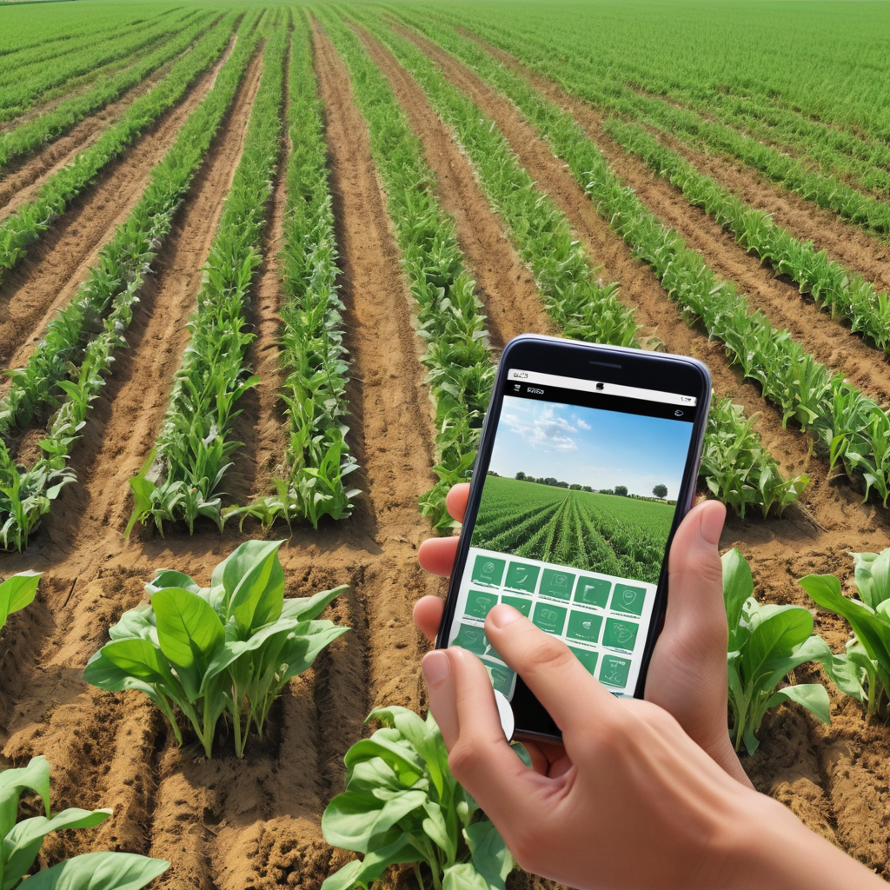
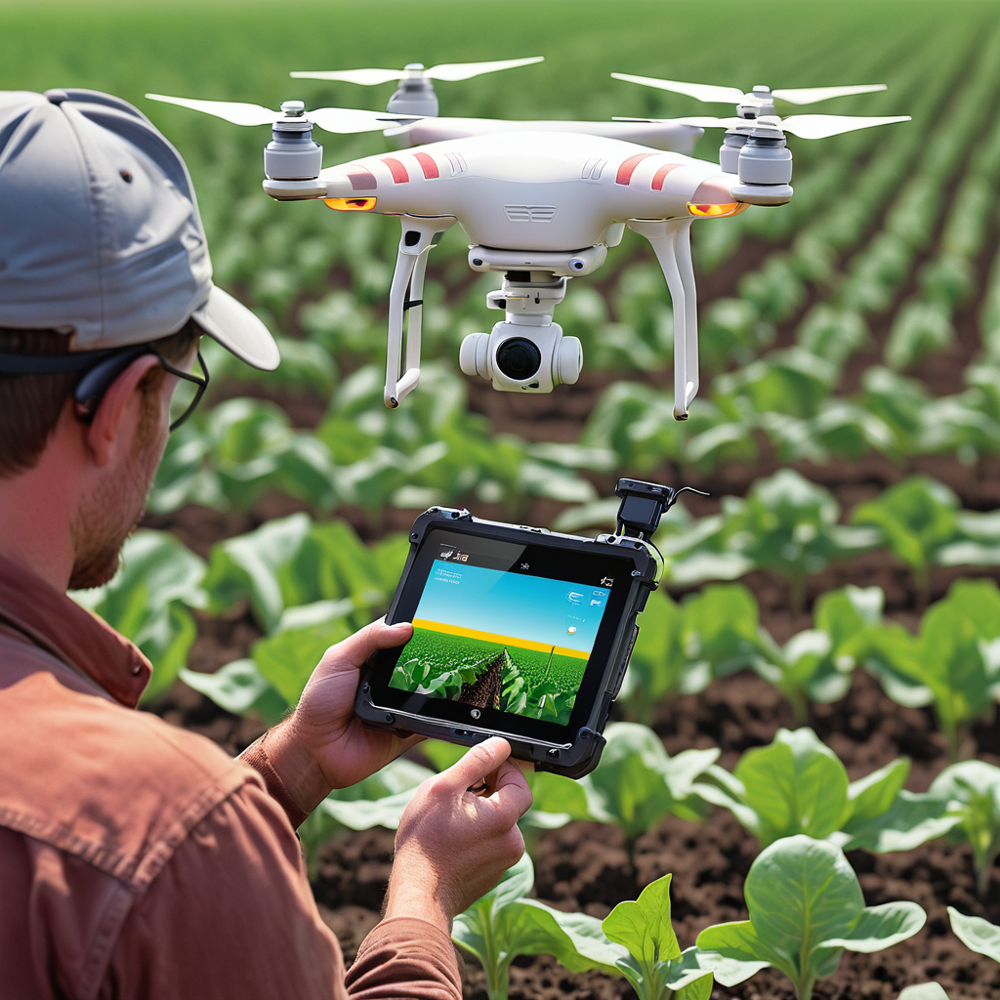
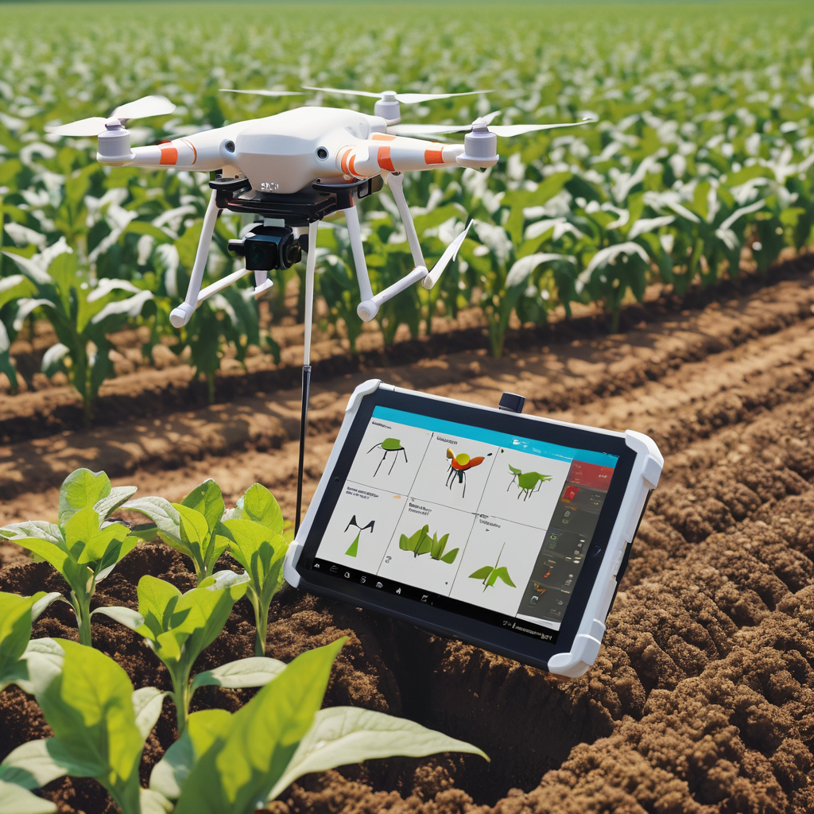

23 may 2024
Cultivating the Future: Smart Farming Technologies and their Benefits
for Agriculture
The world's population is growing, and so is the demand for food. But
traditional farming methods are facing challenges – from resource
scarcity to unpredictable weather. This is where smart farming steps in,
a revolutionary approach that uses technology to make agriculture more
productive, sustainable, and profitable.

What is Smart Farming?
Smart farming is all about leveraging technology to collect real-time
data about your crops and livestock. This data can be used to make
informed decisions about everything from irrigation and fertilization to
pest control and harvesting.
Here are some of the key technologies used in smart farming:
-
Sensors:These little devices are placed throughout the farm to monitor
soil moisture, temperature, nutrient levels, and even plant health.
-
Drones: Equipped with high-resolution cameras and imaging sensors,
drones can provide aerial views of crops, helping farmers identify
problems early on.
-
Internet of Things (IoT): This network of connected devices allows
farmers to monitor and control their operations remotely, using
smartphones or tablets.
-
Precision Agriculture: Using GPS technology, farmers can apply
fertilizer, pesticides, and water exactly where they are needed,
reducing waste and environmental impact.
The Benefits of Smart Farming
Smart farming offers a range of benefits for farmers, including:
-
Increased Crop Yields: By precisely monitoring and managing resources,
farmers can optimize growing conditions and maximize yields.
-
Reduced Costs: Smart farming techniques can help farmers save money on
water, fertilizer, and pesticides.
-
Improved Sustainability: By using fewer resources and minimizing
environmental impact, smart farming is a step towards a more
sustainable future for agriculture.
-
Better Decision-Making: Data-driven insights from sensors and
analytics allow farmers to make informed decisions about their crops
and livestock.


The Future of Farming
Smart farming is still in its early stages, but it has the potential to
revolutionize agriculture. As technology continues to develop, we can
expect to see even more innovative solutions emerge, helping farmers
meet the challenges of the 21st century and ensuring a secure and
sustainable food supply for generations to come.
Ready to embrace the future of farming? Research smart farming
technologies and see how they can benefit your agricultural operation.